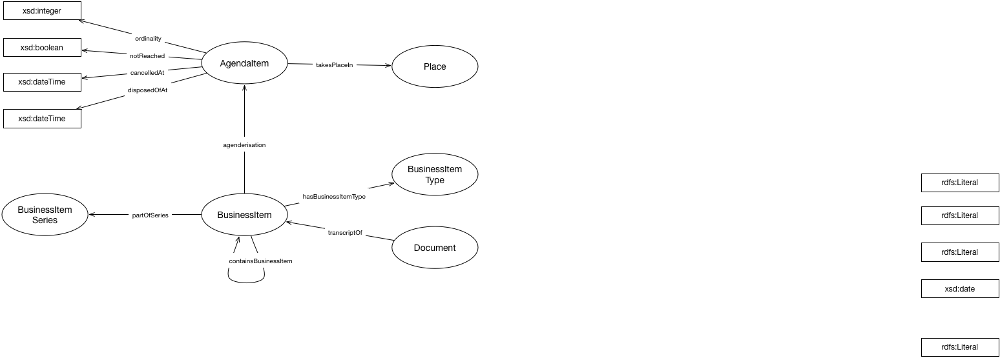

IRI: http://parliament.uk/ontologies/business-item/BusinessItem
IRI: http://parliament.uk/ontologies/business-item/BusinessItemSeries
IRI: http://parliament.uk/ontologies/business-item/BusinessItemType
IRI: http://parliament.uk/ontologies/business-item/CalendaredEvent
IRI: http://parliament.uk/ontologies/business-item/Document
IRI: http://parliament.uk/ontologies/business-item/Place
IRI: http://parliament.uk/ontologies/business-item/calanderisation
IRI: http://parliament.uk/ontologies/business-item/containsBusinessItem
IRI: http://parliament.uk/ontologies/business-item/hasBusinessItemType
IRI: http://parliament.uk/ontologies/business-item/partOfSeries
IRI: http://parliament.uk/ontologies/business-item/takesPlaceIn
IRI: http://parliament.uk/ontologies/business-item/transcriptOf
IRI: http://parliament.uk/ontologies/business-item/cancelledAt
IRI: http://parliament.uk/ontologies/business-item/disposedOfAt
IRI: http://parliament.uk/ontologies/business-item/notReached
This HTML document was obtained by processing the OWL ontology source code through LODE, Live OWL Documentation Environment, developed by Silvio Peroni.